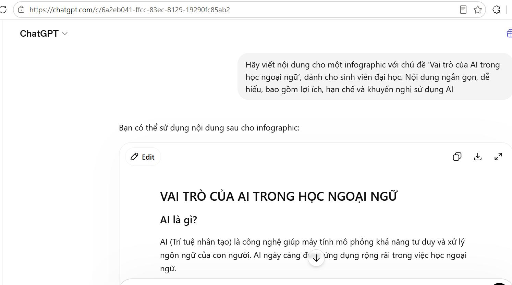
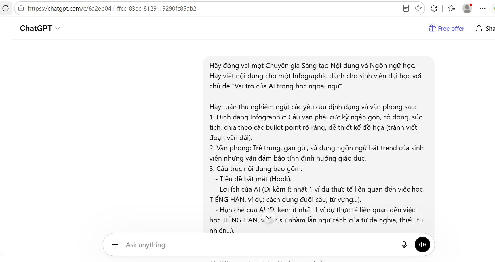
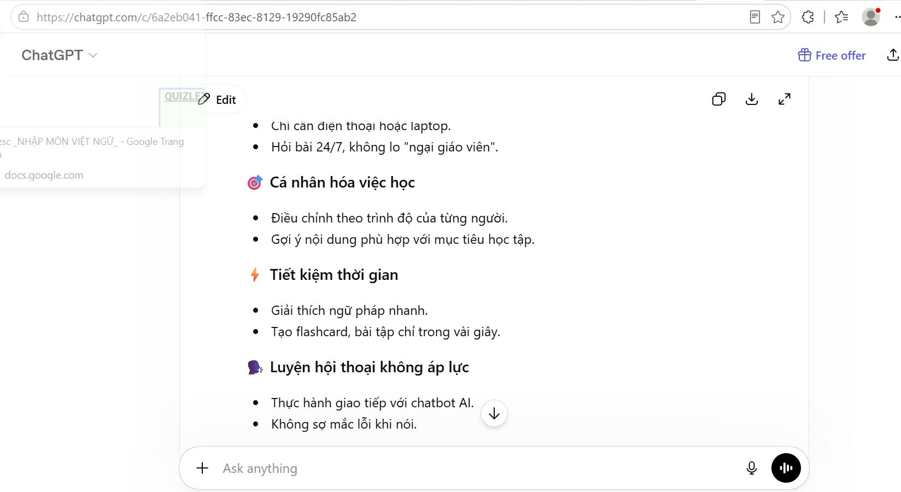
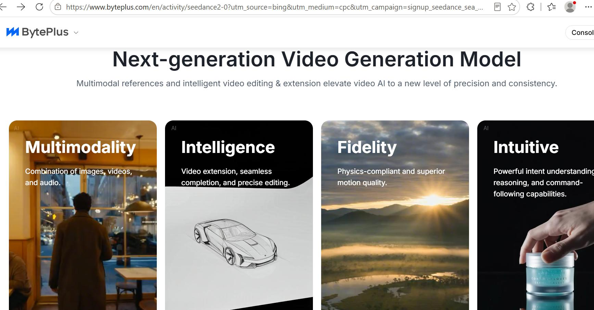
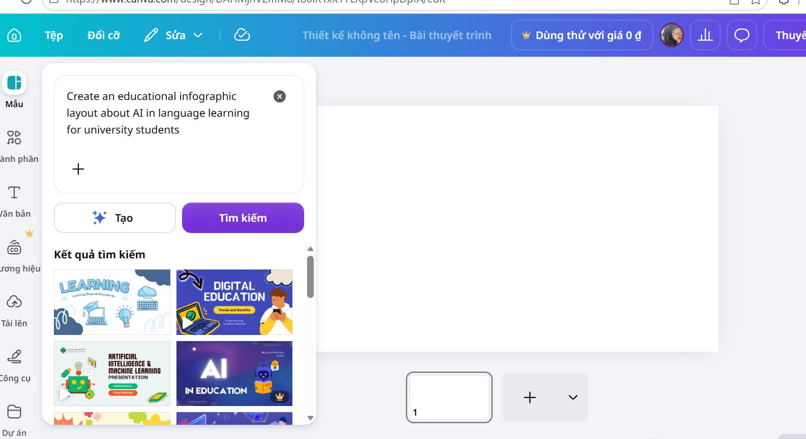

SÁNG TẠO NỘI DUNG SỐ
Các công cụ AI được sử dụng
Bài 5 ghi lại quá trình dùng AI tạo sinh để hỗ trợ xây dựng một infographic về vai trò của AI trong học ngoại ngữ. Trình bày mới dưới đây phân tách rõ từng công cụ và từng giai đoạn xử lý để nội dung chuyên nghiệp và dễ theo dõi hơn.
ChatGPT
Hỗ trợ xây dựng nội dung, dàn ý, tiêu đề và ý chính cho infographic.
DALL·E / image model
Hỗ trợ ý tưởng hình ảnh và thành phần trực quan.
Canva AI
Tổng hợp nội dung và hoàn thiện bố cục infographic.
QUY TRÌNH THỰC HIỆN
Mô tả và minh chứng từng bước
Tạo dàn ý và nội dung bằng ChatGPT
Ảnh đầu tiên ghi lại việc đặt prompt để xác định chủ đề và xây dựng khung nội dung chính cho infographic.

Tinh chỉnh nội dung và cấu trúc
Ở bước tiếp theo, prompt được chỉnh lại để nội dung rõ ràng hơn, có thứ bậc ý và phù hợp với hình thức trình bày trực quan.

Tạo danh sách điểm chính
Ảnh tiếp theo minh họa việc chốt lại các ý trọng tâm, giúp rút gọn phần chữ trước khi chuyển sang thiết kế.

Tham khảo hình ảnh hỗ trợ
Minh chứng này cho thấy quá trình tham khảo hoặc tạo hình ảnh có liên quan trước khi ghép vào sản phẩm cuối cùng.

Hoàn thiện sản phẩm trên Canva
Ảnh cuối thể hiện giao diện Canva khi tiến hành sắp xếp nội dung, hình ảnh và hoàn thiện infographic.

PHÂN TÍCH
Vai trò của AI trong quá trình sáng tạo
Điểm AI làm tốt
AI hỗ trợ tìm ý nhanh, đề xuất cấu trúc rõ ràng và giúp tiết kiệm thời gian ở giai đoạn phát thảo nội dung.
Điểm còn hạn chế
Nội dung vẫn cần kiểm chứng, chỉnh sửa ngôn ngữ và tinh chỉnh để phù hợp hơn với mục tiêu học thuật.
Đóng góp cá nhân
Người thực hiện lựa chọn ý, chỉnh sửa câu chữ, quyết định bố cục và hoàn thiện sản phẩm trên Canva, qua đó giữ vai trò chủ động trong toàn bộ quy trình.